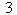
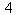
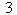
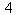
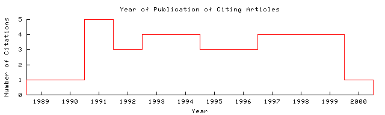

Jerry R. Hobbs and Stuart M. Shieber Artificial Intelligence Center Sri...  Home/Search
Context Related Home/Search
Context Related
| upenn.edu/J/J87/J871005.pdf Cached: PS.gz PS PDF This document uses CoBlitz
to cache paper downloads. If your firewall is blocking outgoing
connections to port 3125, you can use these links to download local
copies.
Image Update HelpPS.gz PS PDF From: upenn.edu/J/J87/ (more) (Enter author homepages) |
Rate this article:    (best) (best)Comment on this article |
Abstract: This paper presents, along with proofs of some of its important properties, an algorithm that generates scoped semantic forms from unscoped expressions encoding predicate-argument structure. The algorithm is not profligate as are those based on permutation of quantifiers, and it can provide a solid foundation for computational solutions where completeness is sacrificed for efficiency and heuristic efficacy (Update)
Context of citations to this paper: More
...and so do not correspond to a correct sentence meaning. This problem is rectified by nested storage (Keller, 1986) and the Hobbs and Shieber (1987) algorithm. However, the linguistic assumptions underlying these approaches have recently been questioned. Park (1995) has argued...
.... in various forms has been developed and extended by various computational linguists, such as (Allen 1987) Alshawi 1990) (Hobbs and Shieber 1987), and (Pereira 1989) Computational Models of Quantification The problem of quantifier scope ambiguity presented a challenge to...
Cited by: More
Assigning A Semantic Scope To Operators - Poesio (1993) (Correct)
An Approach To Multilevel Semantics For Applied Systems - Lavelli, Magnini, Strapparava (1992) (Correct)
A Study in Grammar Design - König (1994) (Correct)
Similar documents (at the sentence level):
71.2%: An Algorithm for Generating Quantifier Scopings - Hobbs (1987) (Correct)
Similar documents based on text: More All
0.7: An Algorithm For Generating Non-Redundant Quantifier Scopings - Espen Vestre Department (1991) (Correct)
0.3: An Improper Treatment Of Quantification In Ordinary English - Jerry Hobbs Sri (1983) (Correct)
0.3: Two Accounts of Scope Availability and Semantic - Undersp Ecification Alistair (Correct)
Related documents from co-citation: More All
17: Quantification and Syntactic Theory (context) - Cooper - 1983
13: Dealing with ambiguities by underspecification: construction (context) - Reyle - 1993
12: Categorial semantics and scoping (context) - Pereira - 1990
BibTeX entry: (Update)
Jerry Hobbs and Stuart M. Shieber. 1987. An algorithm for generating quantifier scopings. Computational Linguistics, 13(1-2):47--63. http://citeseer.ist.psu.edu/hobbs87algorithm.html More
@article{ hobbs87algorithm,
author = "Jerry R. Hobbs and Stuart M. Shieber",
title = "An Algorithm for Generating Quantifier Scopings",
journal = "Computational Linguistics",
volume = "13",
number = "1-2",
pages = "47-63",
year = "1987",
url = "citeseer.ist.psu.edu/hobbs87algorithm.html" }
Citations not processed or no citations identified.

The graph only includes citing articles where the year of publication is known.
Documents on the same site (http://acl.ldc.upenn.edu/J/J87/): More
Abstracts Of Current Literature - If You Are (Correct)
Unknown - On Page Describing (Correct)
Restricting Logic Grammars With Government-Binding Theory - Stabler, Jr. (1987) (Correct)
Online articles have much greater impact More about CiteSeer.IST Add search form to your site Submit documents Feedback
CiteSeer.IST - Copyright Penn State and NEC